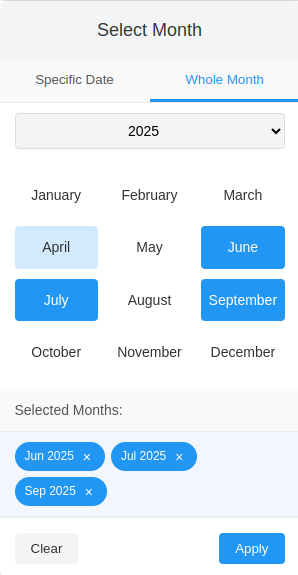
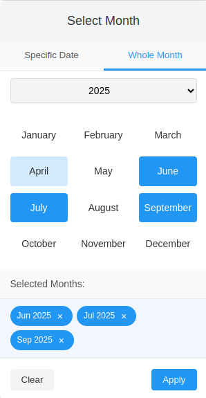

Custom Date Picker Documentation
A versatile date picker with day and month selection modes, multiple selection support, and various formatting options.
Ideal for booking systems where users might want to select specific dates, a whole month, or even several months at once.
Installation
Clone or download the package from GitHub. Include the CSS and JavaScript files in your HTML:
<link rel="stylesheet" href="dist/css/custom-datepicker.min.css">
<script src="dist/js/custom-datepicker.min.js"></script>
Basic Usage
Initialize the date picker on an input element:
// Initialize on a single input with ID
const picker = new DatepickerTabs('#date-input');
// Initialize on multiple inputs with class
const pickers = new DatepickerTabs('.date-input-class');
Options
You can customize the date picker by passing an options object:
const picker = new DatepickerTabs('#date-input', {
// Basic configuration
mode: 'month', // 'day' or 'month' mode
displayType: 'tabs', // Display as 'tabs', 'day', or 'month'
// Selection options
multipleDays: false, // Allow multiple day selection
multipleMonths: true, // Allow multiple month selection
maxMonthSelection: 6, // Max selectable months (when multipleMonths=true)
// Date range options
startDate: null, // Initial selected date
minDate: null, // Minimum selectable date
maxDate: new Date(2026, 11, 31), // Maximum selectable date
futureSaturdaysOnly: true, // Only enable future Saturdays in day mode
// Localization
monthNames: ['January', 'February'], // Custom month names (shorthand provided for example)
dayNames: ['Sun', 'Mon'], // Custom day names (shorthand provided for example)
dateFormat: 'DD/MM/YYYY', // Date display format
monthFormat: 'MMM YYYY', // Month display format
// UI settings
position: 'bottom', // 'bottom' or 'top' position
zIndex: 9999, // Picker z-index
// Persistence
cookieName: 'datepickerTabsMode',// Cookie name for mode storage
// Year offset settings
backwardsYearsOffset: 5, // How many years to show before current year
forwardsYearsOffset: 5, // How many years to show after current year
// Callbacks
onDateChange: function(date) { // Date selection callback
console.log('Selected date:', date);
},
// Container customization
containerId: '', // Custom container ID to render calendar (if not provided, one will be generated)
});
Available Options
mode: Mode of operation: 'day' or 'month' (default: 'day')displayType: Display type: 'tabs', 'day', or 'month' (default: 'tabs')multipleDays: Allow multiple date selection (default: false)multipleMonths: Allow multiple month selection (default: false)maxMonthSelection: Maximum number of months that can be selected (default: null)startDate: Initial selected date (default: null)minDate: Minimum selectable date (default: null)maxDate: Maximum selectable date (default: null)futureSaturdaysOnly: Option for day mode to only enable Saturdays in the future (default: false)monthNames: Array of month names (default: ['January', 'February', ...])dayNames: Array of day names (default: ['Sun', 'Mon', ...])cookieName: Cookie name for mode persistence (default: 'datepickerTabsMode')backwardsYearsOffset: How many years to show before current year (default: 5)forwardsYearsOffset: How many years to show after current year (default: 5)dateFormat: Format for displaying dates (default: 'DD MMM YYYY')monthFormat: Format for displaying months (default: 'MMM YYYY')position: Position of the picker: 'bottom' or 'top' (default: 'bottom')zIndex: z-index for the picker container (default: 9999)onDateChange: Callback function when date(s) change (default: null)containerId: Custom container ID to render calendar (default: '')
Date Formatting
The date picker supports the following tokens for date formatting:
DD: Day of month with leading zero (01-31)D: Day of month without leading zero (1-31)MMM: Month name short (Jan, Feb, etc.)MMMM: Month name full (January, February, etc.)MM: Month number with leading zero (01-12)M: Month number without leading zero (1-12)YYYY: Full year (2023)YY: Short year (23)
Examples:
DD MMM YYYY = 01 Jan 2025
DD/MM/YYYY = 01/01/2025
MM/DD/YYYY = 01/01/2025
YYYY-MM-DD = 2025-01-01
Methods
setDate(date)
Sets the selected date(s)
date: Date object, array of Date objects, or null
// Set a single date
picker.setDate(new Date());
// Set multiple dates
picker.setMultipleDays(true);
picker.setDate([new Date(2023, 0, 1), new Date(2023, 1, 1)]);
// Clear selection
picker.setDate(null);
getDate()
Gets the currently selected date(s)
const selectedDate = picker.getDate();
setMode(mode)
Sets the picker mode ('day' or 'month'). Basically which tab to show active.
mode: 'day' or 'month'
getMode()
Get the current tab mode show (which tab is active)
setDisplayType(type)
Sets the display type ('tabs', 'day', or 'month'). When day or month - no tabs are shown. Only one of the two tabs mode.
type: 'tabs', 'day', or 'month'
picker.setDisplayType('day');
setMultipleDays(enable)
Enables or disables multiple days selection
enable: boolean
picker.setMultipleDays(true);
setMultipleMonths(enable)
Enables or disables multiple months selection
enable: boolean
picker.setMultipleMonths(true);
setDateFormat(format)
Sets the date format for day mode
format: string (e.g., 'YYYY-MM-DD')
picker.setDateFormat('YYYY-MM-DD');
setMonthFormat(format)
Sets the date format for month mode
format: string (e.g., 'MM/YYYY')
picker.setMonthFormat('MM/YYYY');
setMinDate(date)
Sets the minimum selectable date
date: Date object or null
picker.setMinDate(new Date(2023, 0, 1));
setMaxDate(date)
Sets the maximum selectable date
date: Date object or null
picker.setMaxDate(new Date(2024, 11, 31));
setMaxMonthSelection(limit)
Sets the maximum number of months that can be selected when multiple selection is enabled
limit: number
picker.setMaxMonthSelection(3);
show()
Shows the date picker
hide()
Hides the date picker
destroy()
Destroys the date picker instance and cleans up resources
Events
The date picker fires the following custom events:
datepickerShow: Fired when the date picker is showndatepickerHide: Fired when the date picker is hiddendatepickerModeChange: Fired when the mode is changeddatepickerApply: Fired when dates are applieddatepickerClear: Fired when dates are cleared
You can listen for these events on the element where the date picker is initialized:
document.getElementById('date-input').addEventListener('datepickerApply', function(e) {
console.log('Applied date(s):', e.detail);
});
Examples
Basic Date Picker
const datePicker = new DatepickerTabs('#date-input');
Month Picker with Multiple Selection and maximum 3 months, with tabs to date select as well
const monthPicker = new DatepickerTabs('#month-input', {
mode: 'month',
multipleMonths: true,
maxMonthSelection: 3
});
Date Picker with Constraints
const constrainedPicker = new DatepickerTabs('#date-input', {
minDate: new Date(2023, 0, 1),
maxDate: new Date(2023, 11, 31),
dateFormat: 'YYYY-MM-DD'
});
Pick just one month
const monthOnlyPicker = new DatepickerTabs('#month-only-picker', {
mode: 'month',
displayType: 'month',
multipleMonths: false,
monthFormat: 'MMM YYYY',
});
Saturday-Only Picker for Events
const saturdayPicker = new DatepickerTabs('#event-date', {
futureSaturdaysOnly: true,
dateFormat: 'DD/MM/YYYY'
});
 
